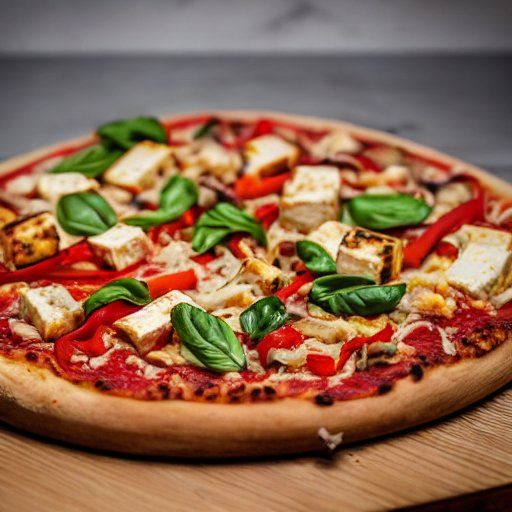

Tofu magique
Préparation: 5 minutes
Cuisson: 20 minutes
Total: 30 minutes
Ingrédients
-
1 bloc de tofu magique

-
2 poivrons rouge
-
1 botte d'ail des bois
Instructions
Préparer le tofu magique et le couper en cubes.
Laver les poivrons rouge et les couper en lamelles.
Ciseler l'ail des bois finement.
Faire revenir le tofu dans une poêle avec un peu d'huile jusqu'à ce qu'il soit doré.
Ajouter les poivrons rouge et cuire quelques minutes.
Incorporer l'ail des bois et mélanger le tout.
Servir chaud accompagné de riz ou de nouilles.